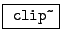
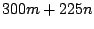

Example E04.difference.tone.pd (Figure 5.11) introduces waveshaping, demonstrating the nonlinearity of the process. Two sinusoids (300 and 225 Hertz, or a ratio of 4 to 3) are summed and then clipped, using a new object class:
:
signal clipper. When the signal lies between the limits specified by the
arguments to the clip~ object, it is passed through unchanged; but
when it falls below the lower limit or rises above the upper limit, it is
replaced by the limit. The effect of
clipping a sinusoidal signal was shown graphically in Figure 5.6.
As long as the amplitude of the sum of sinusoids is less than 50 percent, the
sum can't exceed one in absolute value and the clip~ object passes the
pair of sinusoids through unchanged to the output. As soon as the amplitude
exceeds 50 percent, however, the nonlinearity of the clip~ object
brings forth distortion products (at frequencies  for integers  and
and  ), all of which happening to be multiples of 75, which is thus the
fundamental of the resulting tone. Seen another way, the shortest common
period of the two sinusoids is 1/75 second (which is four periods of the 300
Hertz, tone and three periods of the 225 Hertz tone), so the result repeats
75 times per second.
), all of which happening to be multiples of 75, which is thus the
fundamental of the resulting tone. Seen another way, the shortest common
period of the two sinusoids is 1/75 second (which is four periods of the 300
Hertz, tone and three periods of the 225 Hertz tone), so the result repeats
75 times per second.
The frequency of the 225 Hertz tone in the patch may be varied. If it is moved slightly away from 225, a beating sound results. Other values find other common subharmonics, and still others give rise to rich, inharmonic tones.